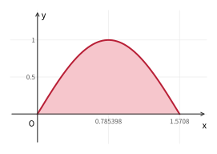
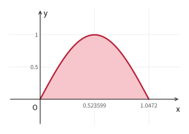
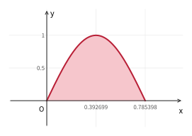

別冊練習問題 7 の解答 sin ax の回転体の体積
(1) 曲線 \(y=\sin 2x\ \left(0\leqq x\leqq\dfrac\pi{2}\right)\) と \(x\) 軸で囲まれた図形を \(x\) 軸のまわりに1回転してできる立体の体積を求めよ。
体積の公式
\(x\) 軸のまわりの回転体は、断面が半径 \(y\) の円板。
\[V=\pi\int_0^{\dfrac\pi{2}}y^2dx=\pi\int_0^{\dfrac\pi{2}}\sin^22x\,dx\]
半角の公式で次数を下げる
\(\sin^2\theta=\dfrac{1-\cos2\theta}{2}\) で \(\theta=2x\) とする。
\[\sin^22x=\dfrac{1-\cos 4x}{2}\]\[V=\pi\int_0^{\dfrac\pi{2}}\dfrac{1-\cos 4x}{2}dx=\dfrac\pi2\int_0^{\dfrac\pi{2}}(1-\cos 4x)\,dx\]原始関数を求める
\(\int1\,dx=x\)、\(\int\cos 4x\,dx=\dfrac{\sin 4x}{4}\)（\((\sin 4x)'=4\cos 4x\) だから）。
\[\dfrac\pi2\left[x-\dfrac{\sin 4x}{4}\right]_0^{\dfrac\pi{2}}\]端の値を代入する
\(\sin2\pi=0\)、\(\sin0=0\)。
\[\left[x-\dfrac{\sin 4x}{4}\right]_0^{\dfrac\pi{2}}=\left(\dfrac\pi{2}-\dfrac{\sin2\pi}{4}\right)-\left(0-\dfrac{\sin0}{4}\right)=\dfrac\pi{2}\]計算する
\[V=\dfrac\pi2\cdot\dfrac\pi{2}=\dfrac{\pi^{2}}{4}\]【答案】
\[\dfrac{\pi^{2}}{4}\]答
(2) 曲線 \(y=\sin 3x\ \left(0\leqq x\leqq\dfrac\pi{3}\right)\) と \(x\) 軸で囲まれた図形を \(x\) 軸のまわりに1回転してできる立体の体積を求めよ。
体積の公式
\(x\) 軸のまわりの回転体は、断面が半径 \(y\) の円板。
\[V=\pi\int_0^{\dfrac\pi{3}}y^2dx=\pi\int_0^{\dfrac\pi{3}}\sin^23x\,dx\]
半角の公式で次数を下げる
\(\sin^2\theta=\dfrac{1-\cos2\theta}{2}\) で \(\theta=3x\) とする。
\[\sin^23x=\dfrac{1-\cos 6x}{2}\]\[V=\pi\int_0^{\dfrac\pi{3}}\dfrac{1-\cos 6x}{2}dx=\dfrac\pi2\int_0^{\dfrac\pi{3}}(1-\cos 6x)\,dx\]原始関数を求める
\(\int1\,dx=x\)、\(\int\cos 6x\,dx=\dfrac{\sin 6x}{6}\)（\((\sin 6x)'=6\cos 6x\) だから）。
\[\dfrac\pi2\left[x-\dfrac{\sin 6x}{6}\right]_0^{\dfrac\pi{3}}\]端の値を代入する
\(\sin2\pi=0\)、\(\sin0=0\)。
\[\left[x-\dfrac{\sin 6x}{6}\right]_0^{\dfrac\pi{3}}=\left(\dfrac\pi{3}-\dfrac{\sin2\pi}{6}\right)-\left(0-\dfrac{\sin0}{6}\right)=\dfrac\pi{3}\]計算する
\[V=\dfrac\pi2\cdot\dfrac\pi{3}=\dfrac{\pi^{2}}{6}\]【答案】
\[\dfrac{\pi^{2}}{6}\]答
(3) 曲線 \(y=\sin 4x\ \left(0\leqq x\leqq\dfrac\pi{4}\right)\) と \(x\) 軸で囲まれた図形を \(x\) 軸のまわりに1回転してできる立体の体積を求めよ。
体積の公式
\(x\) 軸のまわりの回転体は、断面が半径 \(y\) の円板。
\[V=\pi\int_0^{\dfrac\pi{4}}y^2dx=\pi\int_0^{\dfrac\pi{4}}\sin^24x\,dx\]
半角の公式で次数を下げる
\(\sin^2\theta=\dfrac{1-\cos2\theta}{2}\) で \(\theta=4x\) とする。
\[\sin^24x=\dfrac{1-\cos 8x}{2}\]\[V=\pi\int_0^{\dfrac\pi{4}}\dfrac{1-\cos 8x}{2}dx=\dfrac\pi2\int_0^{\dfrac\pi{4}}(1-\cos 8x)\,dx\]原始関数を求める
\(\int1\,dx=x\)、\(\int\cos 8x\,dx=\dfrac{\sin 8x}{8}\)（\((\sin 8x)'=8\cos 8x\) だから）。
\[\dfrac\pi2\left[x-\dfrac{\sin 8x}{8}\right]_0^{\dfrac\pi{4}}\]端の値を代入する
\(\sin2\pi=0\)、\(\sin0=0\)。
\[\left[x-\dfrac{\sin 8x}{8}\right]_0^{\dfrac\pi{4}}=\left(\dfrac\pi{4}-\dfrac{\sin2\pi}{8}\right)-\left(0-\dfrac{\sin0}{8}\right)=\dfrac\pi{4}\]計算する
\[V=\dfrac\pi2\cdot\dfrac\pi{4}=\dfrac{\pi^{2}}{8}\]【答案】
\[\dfrac{\pi^{2}}{8}\]答